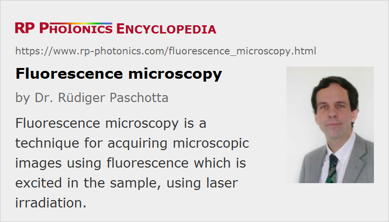

Fluorescence Microscopy
Definition: a technique for acquiring microscopic images using fluorescence which is excited in the sample
More general term: microscopy
German: Fluoreszenzmikroskopie
Categories: vision, displays and imaging, methods
How to cite the article; suggest additional literature
Author: Dr. Rüdiger Paschotta
Fluorescence microscopy is a technique for acquiring microscopic images of samples (often biological materials) using fluorescence within the sample, which is usually excited with a sharply focused diffraction-limited laser beam. The focus of the laser beam is raster scanned through the sample (e.g. using galvo mirrors), and the fluorescent light excited in the sample is collected with some optics and monitored with a photodetector. Residual laser light can be eliminated with an optical filter before the detector. The fluorescence microscope is usually operated with a computer (a PC or a laptop), which controls the scan, records the fluorescence intensities, and finally generates, processes and stores the obtained images. Such devices are widely used in biomedical imaging, for example.
It is common to use a confocal geometry (Figure 1) (→ confocal scanning microscopes), where the light from the focus in the sample is imaged onto a pinhole, which therefore suppresses light coming from other regions (e.g. from before the focus). This allows the use of relatively thick samples, compared with conventional microscopy, and results in a high depth resolution. For optimal performance, it is essential that the used microscope objective has appropriate achromatic properties, so that the fluorescence slide has the correct focus position at the pinhole.
The fluorescence can originate from molecules which occur naturally in the sample, or from dye molecules which are introduced during sample preparation. The image contrast can arise from varying concentrations on the fluorescent molecules, or from influences on these molecules which e.g. modify their fluorescent lifetime (see below).
The requirements on the used optical filter can be demanding, since the generated fluorescence light may be rather faint compared with the intense laser light, and the wavelength separation is often not very large.
In the simplest form of fluorescence microscopy, the laser is operated continuously, and its wavelength is chosen to be in an absorbing spectral region of the fluorescent molecules, which can therefore be excited with single-photon absorption.
Multiphoton Microscopy
An important variant of fluorescence microscopy utilizes multiphoton excitation of the fluorescence. Here, femtosecond pulses from a mode-locked laser are used, where the laser wavelength is not in a region of linear absorption, but multiphoton absorption (typically two-photon or three-photon absorption) occurs due to the high peak intensities. The laser wavelength is then often in the near-infrared region. Multiphoton fluorescence microscopy requires a more expensive laser system, but its advantages are manifold and substantial:
- Due to its nonlinear nature, the absorption is much more concentrated in the beam focus, so that the resolution in both the lateral and axial directions is increased.
- For the same reason, the laser beam can penetrate larger layers of transparent material, i.e., thicker samples can be used. Also, photobleaching effects are minimized by concentrating the excitation to the “useful” region only.
- For the infrared wavelengths used, scattering and absorption e.g. in biological samples is typically much weaker.
- As the excited fluorescence is naturally concentrated in the focus, it is not really necessary to use confocal detection (see above); elimination of the pinhole increases the detection efficiency. In some cases, the fluorescence is even detected on the side, rather than in the direction of the laser beam or opposite to it.
- Time-gated detection allows the monitoring of the fluorescence intensities in certain time intervals after the exciting pulses. This makes it possible to measure the local fluorescence lifetime, which can also be used to obtain a good image contrast. This technique is called FLIM = fluorescence lifetime imaging microscopy. A variation is FRET = fluorescence resonant energy transfer, where energy transfer from excited molecules to other molecules in the sample is utilized. Other related techniques utilize wavelength-tunable lasers to obtain additional information e.g. by tuning to absorption wavelengths of different fluorescent molecules.
Note that the wavelength difference between laser light and fluorescence light is particularly large for multi-photon excitation. This makes the design of the filter less demanding. On the other hand, the microscope objective needs to be specially designed not only for high transmissivity for all involved wavelengths, but also for rather similar values of the focal length despite the large wavelength difference.
Stimulated Emission Depletion Microscopy for Super-resolution
Another variant of fluorescence microscopy is stimulated emission depletion microscopy (STED microscopy) [2–4, 12]. Here, the fluorescence marker substance is first excited with a Gaussian-shaped pump pulse. Shortly thereafter, a second pulse with a doughnut (donut) shape (having zero intensity at the center) is sent to the same spot. The second pulse has a slightly longer wavelength, and as a consequence it mainly causes stimulated emission, which depletes the excited region preferentially in a ring around the center of the original spot. As a result, a smaller excited region remains, and this can be exploited to achieve a significantly higher spatial resolution of below 100 nm, sometimes even below 20 nm. This resolution is substantially better than is normally possible for optical microscopy (apart from near-field microscopy), i.e., Abbe's resolution limit is broken.
In 2014, the Nobel Prize in Chemistry [17] was awarded to Eric Betzig, Stefan W. Hell and William E. Moerner “for the development of super-resolved fluorescence microscopy”. Whereas Stefan W. Hell had developed STED microscopy, Eric Betzig and William E. Moerner pioneered another method named single-molecule microscopy, which also allows the creation of super-resolution images. It was recognized by the prize that the long-standing resolution limit according to calculations of Ernst Abbe can finally be surpassed; one may now even use the term nanoscopy instead of microscopy for these imaging methods, as structures on a length scale far below a micrometer (thus in the nanometer regime) have become accessible. This substantially widens the field of applications of light microscopy. It may be somewhat surprising that advances which clearly lie in the field of physics have become the basis for a Nobel Prize in chemistry, but Stefan Hell's essential work was actually done at the Max Planck Institute for Biophysical Chemistry in Göttingen, and some important applications lie in the fields of chemistry and biology.
Stochastic Optical Reconstruction Microscopy
A different class of methods for fluorescence microscopy is stochastic optical reconstruction microscopy (STORM), also called (fluorescence) photoactivation localization microscopy ((F)PALM) [6–8, 11]. Here, the sample (normally some biological material) is prepared such that it contains a low concentration of certain fluorescent molecules, which preferably occupy certain positions in the sample, e.g. in microtubules within cells. These fluorescent molecules (fluorophores, fluorescent labels) can be localized with a resolution well below the diffraction limit, if a sufficiently high number of fluorescence photons from each molecule is detected, and the fluorophores have a sufficiently large mutual distance. (The image of such a molecule is a spot of some larger size, but its center can be determined quite precisely if different spots do not overlap.)
A single image taken with that method only reveals only certain locations, the positions of some fluorophores. A full image of the sample can be obtained by combining multiple images, where different sets of the fluorophores are activated. Activation and deactivation of the fluorophores occurs by the influence of the scanning laser beam, because the fluorophores can be switched between a fluorescent state and a “dark” state.
Applications
As mentioned above, fluorescence microscopy is mostly used for biological samples, e.g. for medical diagnosis. It is currently investigated in which form fluorescence microscopy can be used e.g. for the detection of cancer. It is also useful for imaging living cells. Particularly with multiphoton fluorescence microscopy, it is possible, e.g., to watch cell division without severely influencing the cells, whereas cells often cannot tolerate single-photon excitation for extended time intervals.
Suppliers
The RP Photonics Buyer's Guide contains 16 suppliers for fluorescence microscopes. Among them:
Questions and Comments from Users
Here you can submit questions and comments. As far as they get accepted by the author, they will appear above this paragraph together with the author’s answer. The author will decide on acceptance based on certain criteria. Essentially, the issue must be of sufficiently broad interest.
Please do not enter personal data here; we would otherwise delete it soon. (See also our privacy declaration.) If you wish to receive personal feedback or consultancy from the author, please contact him e.g. via e-mail.
By submitting the information, you give your consent to the potential publication of your inputs on our website according to our rules. (If you later retract your consent, we will delete those inputs.) As your inputs are first reviewed by the author, they may be published with some delay.
Bibliography
| [1] | W. Denk et al., “Two-photon laser scanning fluorescence microscopy”, Science 248, 73 (1990), doi:10.1126/science.2321027 |
| [2] | S. W. Hell and J. Wichmann, “Breaking the diffraction resolution limit by stimulated emission”, Opt. Lett. 19 (11), 780 (1994), doi:10.1364/OL.19.000780 |
| [3] | S. W. Hell, and M. Kroug, “Ground-state depletion fluorescence microscopy: a concept for breaking the diffraction resolution limit”, Appl. Phys. B 60, 495 (1995), doi:10.1007/BF01081333 |
| [4] | T. A. Klar et al., “Breaking Abbe's diffraction resolution limit in fluorescence microscopy with stimulated emission depletion beams of various shapes”, Phys. Rev. E 64 (6), 066611 (2001), doi:10.1103/PhysRevE.64.066613 |
| [5] | M. Dyba and S. W. Hell, “Focal spots of size λ/23 open up far-field fluorescence microscopy at 33 nm axial resolution”, Phys. Rev. Lett. 88 (16), 163901 (2002), doi:10.1103/PhysRevLett.88.163901 |
| [6] | M. J. Rust et al., “Sub-diffraction-limit imaging by stochastic reconstruction optical microscopy (STORM)”, Nature Meth. 3, 793 (2006), doi:10.1038/nmeth929 |
| [7] | E. Betzig et al., “Nanometer resolution imaging intracellular fluorescent proteins at nanometer resolution”, Science 313 (5793), 1642 (2006), doi:10.1126/science.1127344 |
| [8] | S. T. Hess et al., “Ultra-high resolution imaging by fluorescence photoactivation localization microscopy”, Biophys. J. 91, 4258 (2006), doi:10.1529/biophysj.106.091116 |
| [9] | B. Harke et al., “Resolution scaling in STED microscopy”, Opt. Express 16 (6), 4154 (2008), doi:10.1364/OE.16.004154 |
| [10] | D. Wildanger et al., “STED microscopy with a supercontinuum laser source”, Opt. Express 16 (13), 9614 (2008), doi:10.1364/OE.16.009614 |
| [11] | X. Zhuang, “Nano-imaging with STORM”, Nature Photon. 3, 365 (2009), doi:10.1038/nphoton.2009.101 |
| [12] | S. W. Hell et al., “Diffraction-unlimited three-dimensional optical nanoscopy with opposing lenses”, Nature Photon. 3, 381 (2009), doi:10.1038/nphoton.2009.112 |
| [13] | G. Moneron and S. W. Hell, “Two-photon excitation STED microscopy”, Opt. Express 17 (17), 14567 (2009), doi:10.1364/OE.17.014567 |
| [14] | E. E. Hoover and J. A. Squier, “Advances in multiphoton microscopy technology”, Nature Photon. 7, 93 (2013), doi:10.1038/nphoton.2012.361 |
| [15] | P. Gao et al., “Background suppression in fluorescence nanoscopy with stimulated emission double depletion”, Nature Photon. 11, 163 (2017), doi:10.1038/nphoton.2016.279 |
| [16] | J. Mertz, “Strategies for volumetric imaging with a fluorescence microscope” (review paper), Optica 6 (10), 1261 (2019), doi:10.1364/OPTICA.6.001261 |
| [17] | Nobel Prize in Chemistry 2014, https://www.nobelprize.org/prizes/chemistry/2014/summary/ |
| [18] | National High Magnetic Field Laboratory, Optical microscopy primer on fluorescence microscopy, (http://micro.magnet.fsu.edu/primer/techniques/fluorescence/fluorhome.html) |
See also: fluorescence, laser microscopy, multiphoton absorption, confocal scanning microscopes
and other articles in the categories vision, displays and imaging, methods
|  |
If you like this page, please share the link with your friends and colleagues, e.g. via social media:
These sharing buttons are implemented in a privacy-friendly way!